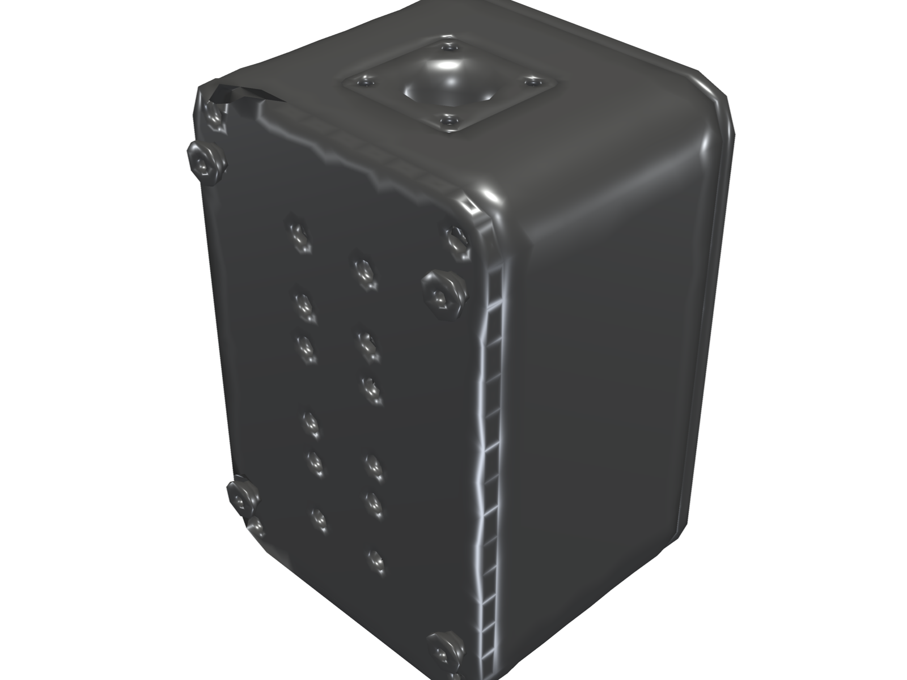
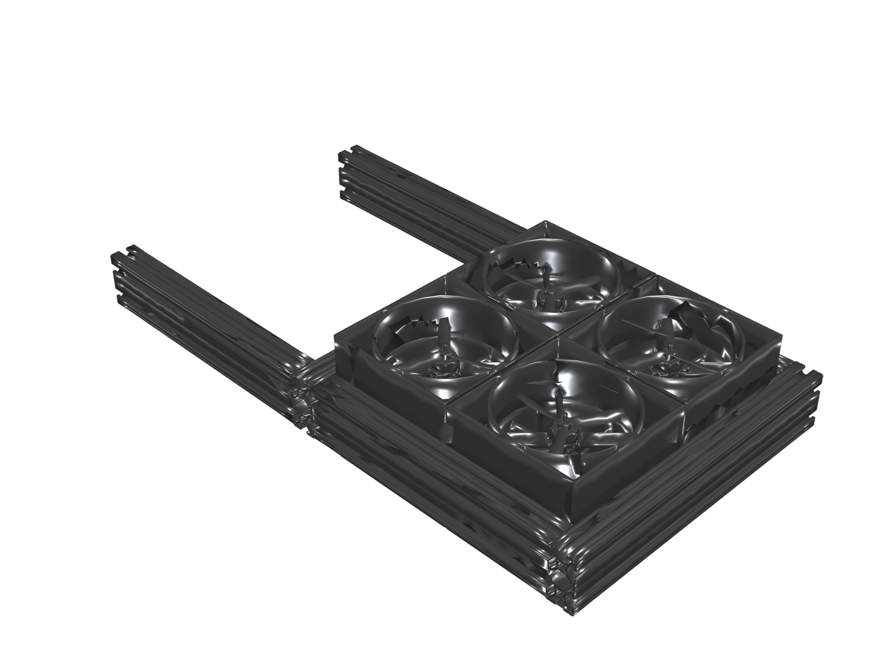
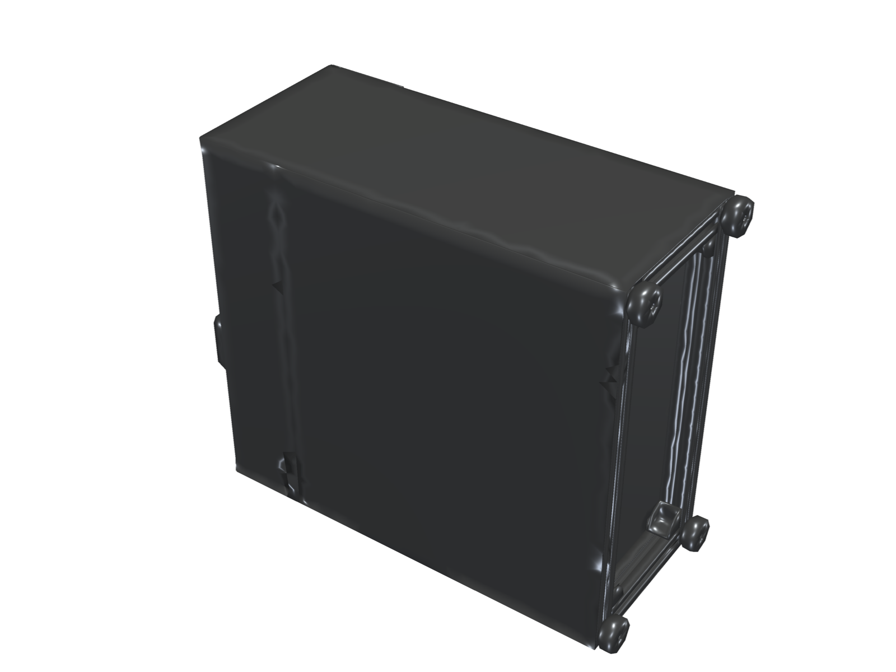

APH Labs; yüksek hassasiyetli optik metroloji cihazları, aerodinamik enerji sistemleri ve ağır hizmet tipi endüstriyel makineler tasarlar ve üretir.
Yüksek güvenilirlik, dar toleranslar ve endüstriyel standartlar için geliştirilmiş tescilli çözümler.

3D yazıcı filament ekstrüzyon hatları için geliştirilmiş temassız çift eksenli optik ölçüm sistemi. Sub-mikron tekrarlanabilirlik, anlık veri işleme ve kapalı çevrim hat entegrasyonu sunar.

Özel difüzör kanal geometrisi ile sınır tabaka hava akışını optimize eden mikro rüzgar türbini. Düşük rüzgar hızlarında yüksek tork ve verimli enerji dönüşümü sağlar.

Teknik polimerler ve kompozit malzemeler için tasarlanmış çift şaftlı endüstriyel kırma makinesi. Mukavemet analizli kesici şaftları ve planet redüktör tahrik sistemi ile kesintisiz çalışma sunar.
Fikirden nihai makineye kadar her aşamada analitik doğrulama ve yüksek kalite standartları.
Tolerans yığılım analizi, kinematik mekanizmalar ve montaj optimizasyonu ile endüstriyel 3D modelleme.
Yapısal gerilme, dinamik yorulma ve aerodinamik akışkanlar mekaniği hesaplamalı doğrulamaları.
Yüksek hızlı DSP sinyal işleme, optik sensör sürücüleri ve endüstriyel haberleşme mimarileri.
Özel makine tasarımı, metroloji entegrasyonu veya teknik şartnameler için bizimle bağlantı kurun.
Mühendislik ekibimiz gereksinimlerinizi inceleyerek en kısa sürede geri dönüş sağlayacaktır.